Was Power BI hier leistet — und was nicht
Dashboard, Notebooks und die Dash-App der Fallstudie lesen ihre Kennzahlen aus den Sichten v_* des Schemas burgermetrics — jede Kennzahl genau einmal definiert (Lab 01, „Sichten als Vertrag“). Power BI Desktop ist ein weiterer Leser derselben Datenbank. Drei Dinge steuert es bei, die jemand ohne SQL braucht:
- ein Modell: die Tabellen des Galaxy-Schemas aus Lab 03, kopiert in den Speicher und verbunden über Beziehungen, die Power BI aus den Fremdschlüsseln der Datenbank übernimmt;
- Measures: Kennzahlen als Formeln in DAX, die bei jeder Abfrage im jeweiligen Filter neu rechnen —
Umsatzist eine Definition, keine gespeicherte Zahl; - einen Bericht: Kacheln, Balken und Linien, die dasselbe Measure nach Filiale oder Monat aufteilen, ohne dass jemand eine Abfrage schreibt.
Was Power BI nicht leistet, ist die Definition der Kennzahl. Die steht in der Sicht: v_kennzahlen_jahr legt fest, was Umsatz ist — die Summe von net_total, dem Bestellwert nach Rabatt (Lab 03) —, und jedes Werkzeug muss dieselbe Zahl liefern. Ein Measure, das anders rechnet als die Sicht, ist ein Fehler. Die Kontrollzahl dieses Labs ist deshalb dieselbe wie in Lab 01: 2.994.771,13 € Umsatz für 2025 aus 136.557 Bestellungen.
Die Reihenfolge der Abschnitte ist die Reihenfolge der Arbeit: erst die Verbindung, dann das Modell mit seinen Beziehungen, dann die Measures, zuletzt der Bericht. Wer mit dem Diagramm beginnt, zieht Spalten in ein Bild und überlässt Power BI die Wahl der Aggregation — und für jede Zahlenspalte, auch für eine Bestellnummer, schlägt Power BI die Summe vor. Der Simulator dieses Labs bildet genau diesen Mechanismus nach.
Werkzeug und Stand. Power BI Desktop läuft unter Windows; dieses Lab bezieht sich auf Version 2.157.1354.0, das Update August 2026. Klickwege, Meldungen und Bildschirmfotos sind am 21.09.2026 mit dieser Version in einer Windows-11-VM in deutscher Oberfläche gegen die Datenbank der Fallstudie geprüft; die englischen Begriffe des Labs stehen dort als Datenbereich (Data pane), Build-Bereich mit den Ablagen X-Achse, Y-Achse, Zeilen, Werte (Field Wells), Modellansicht und Measure. Das fertige Projekt liegt als Power-BI-Projekt (.pbip) unter powerbi/BurgerMetrics/ im Repository — ohne Daten und ohne Kennwort; nach dem Öffnen fragt Power BI nach der Anmeldung. Preis und Lizenzbedingungen sind nach Herstellerangabe zu prüfen. Der Bestand der Fallstudie ist synthetisch, und das Konto studi_daba liest nur — was Power BI in das Modell kopiert, sind keine personenbezogenen Daten.
Hinweis. Bei den hier gezeigten Werkzeugen handelt es sich um eine Auswahl — sie ist weder als Empfehlung noch als Werbung zu verstehen. Power BI steht neben Tableau (Lab 05) und Python (Lab 06): drei Wege zu denselben Sichten, und die Kontrollzahl muss in jedem dieselbe sein.
Die Begriffe
| Begriff | Was es ist | Wo |
|---|---|---|
| Import gegen DirectQuery | Import kopiert die gewählten Tabellen in den Speicher von Power BI; Bilder rechnen aus dem Speicher, neue Daten kommen erst mit dem nächsten Aktualisieren. DirectQuery lässt die Daten in PostgreSQL und schickt bei jedem Bild Abfragen an die Datenbank; jede Abfrage, die mehr als 1.000.000 Zeilen liefert, scheitert, und eine automatische Datumshierarchie gibt es nicht. Microsoft empfiehlt Import als Regelfall (Stand 09/2026). | Verbinden |
| Beziehung | Die Verbindung zweier Tabellen über eine Spalte, in der Modellansicht eine Linie. Kardinalität *:1: viele Bestellungen, eine Filiale — die 1-Seite ist die Dimension, ihre Schlüsselspalte ist eindeutig. Filterrichtung einfach: ein Filter auf der Dimension wirkt in der Faktentabelle, nicht umgekehrt. Je Tabellenpaar ist nur eine Beziehung aktiv. |
Modell |
| Measure gegen berechnete Spalte | Ein Measure ist eine Formel in DAX, die keinen Wert speichert, sondern bei jeder Abfrage im Filterkontext neu rechnet: Umsatz = SUM(fact_orders[net_total]). Eine berechnete Spalte wird beim Laden je Zeile berechnet und im Modell gespeichert; sie kennt die aktuelle Zeile, aber nicht den Bericht. Kennzahlen sind Measures; berechnete Spalten bilden Kategorien je Zeile. |
Measures |
| Filterkontext | Die Menge der Filter, in der ein Measure gerade rechnet: die Achse eines Balkendiagramms, die Legende, ein Filter der Seite. Dasselbe Measure Umsatz liefert im Balken „BM Europastern“ den Umsatz dieser Filiale und in einer Kachel ohne Achsen den Gesamtwert. CALCULATE verändert den Filterkontext aus der Formel heraus: Umsatz 2025 setzt das Jahr fest und ersetzt damit jeden Filter, der von außen auf dim_date[year] liegt — Filter auf anderen Spalten bleiben. |
Measures, Bericht |
Für den Kurs gilt Import
Die Rolle studi_daba hält höchstens zwanzig gleichzeitige Sitzungen (Lab 01). Ein Bericht im DirectQuery-Modus schickt für jedes Bild Abfragen an supabase.butscher.cloud; ein Hörsaal voller solcher Berichte belegt die zwanzig Sitzungen in Minuten. Import fragt die Datenbank beim Laden und beim Aktualisieren — für einen Bestand, der sich nicht stündlich ändert, reicht das. Die Entscheidung fällt je Tabelle; ein zusammengesetztes Modell könnte Dimensionen importieren und eine Faktentabelle in DirectQuery lassen, braucht für die Fallstudie aber niemand.
Verbinden
Der Weg zur Datenbank beginnt mit Start → Daten abrufen → Weitere… → PostgreSQL-Datenbank; im Suchfeld des Dialogs „Datenquelle auswählen“ genügt PostgreSQL. Die Verbindung ist ein einziger Dialog, „Mit Datenquelle verbinden“: Server supabase.butscher.cloud:5433 — der Port steht mit Doppelpunkt hinter dem Servernamen —, Datenbank postgres, Konnektivitätsmodus Importieren, darunter die Anmeldeinformationen mit Authentifizierungsart Standard, Benutzername studi_daba und Kennwort thws, Datenschutzebene Keine. Das Kästchen „Verschlüsselte Verbindung verwenden“ ist vorausgewählt; der Server der Fallstudie läuft ohne SSL (Lab 01), und in den Datenquelleneinstellungen steht die Verbindung danach mit „Verbindung verschlüsseln“ aus. Power BI merkt sich die Anmeldung je Server: Beim zweiten Verbinden sind Benutzername und Kennwort schon eingetragen, und die Einstellung findet sich unter Datei → Optionen und Einstellungen → Datenquelleneinstellungen → Berechtigungen bearbeiten.
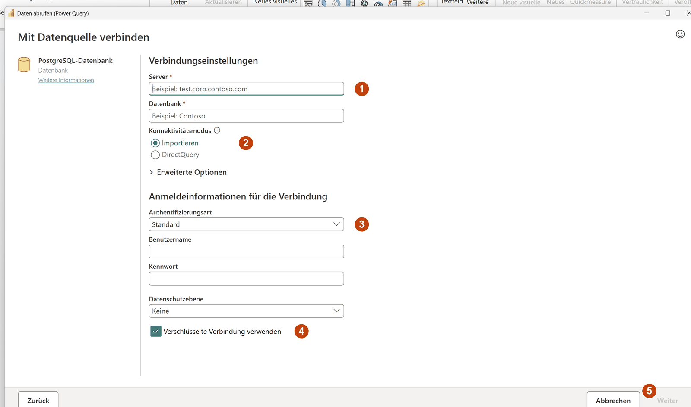
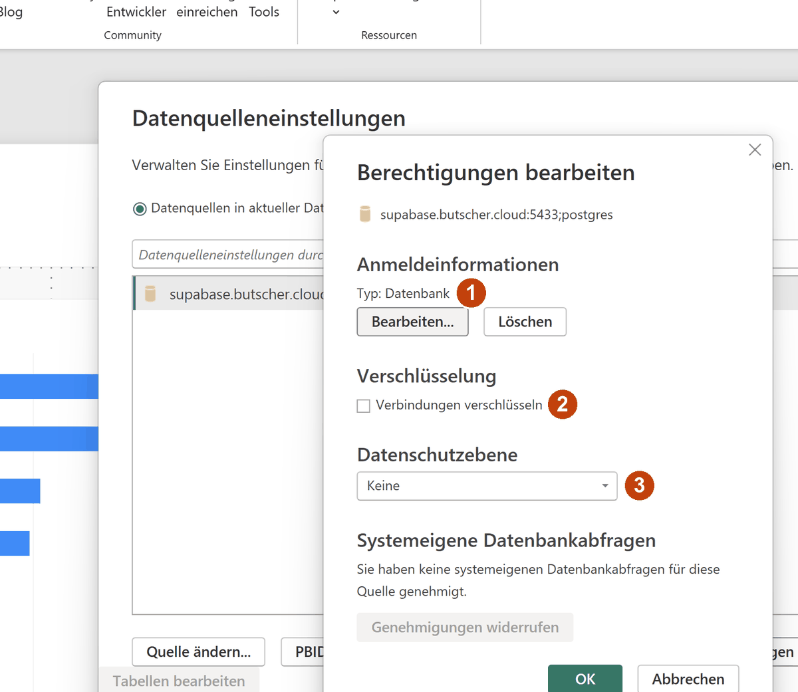
Bildschirmfotos vom 21.09.2026, Power BI Desktop 2.157.1354.0 (August 2026) unter Windows 11, deutsche Oberfläche — zum Vergrößern anklicken.
Anders als bei Tableau (Lab 05) ist kein Treiber zu installieren: Der PostgreSQL-Connector bringt Npgsql mit (nach Herstellerangabe seit Dezember 2019, Stand 09/2026). Nach „Weiter“ öffnet sich der Navigator „Daten auswählen“ mit einer Liste aller Tabellen und Sichten der Datenbank, jede als schema.tabelle — 48 Einträge, darunter die 16 Tabellen und 10 Sichten von wawi. burgermetrics im Suchfeld lässt 14 übrig: die 14 Tabellen des Auswertungsmodells. Die 38 materialisierten Sichten v_* fehlen in der Liste — der Navigator kennt Tabellen und gewöhnliche Sichten, keine materialisierten (Stolperstein unten). Für ein eigenes Modell kreuzen Sie dim_branch, dim_customer, dim_date, dim_product, fact_orders, fact_order_items und fact_reviews an; obt_orders bleibt draußen: 41 Spalten, die alles doppelt tragen, was in Fakten und Dimensionen schon steht. „Load“ lädt die sieben Tabellen in den Speicher; der Dialog „Laden“ zählt die Zeilen je Tabelle mit — 8, 25.000, 3.377, 57, 754.513, 2.950.082 und 10.000.
Bildschirmfoto vom 21.09.2026, Power BI Desktop 2.157.1354.0 (August 2026) unter Windows 11, deutsche Oberfläche — zum Vergrößern anklicken.
- 1Das Suchfeld mit
burgermetrics. Ohne Suchbegriff stehen alle 48 Tabellen und Sichten der Datenbank in einer Liste, auswawi,burgermetricsund den Systemschemata; eine Schemaauswahl gibt es nicht. - 2Angekreuzt sind die sieben Tabellen des Modells in diesem Lab: vier Dimensionen und drei Faktentabellen — dieselben Tabellen wie in Lab 03.
- 3
obt_ordersbleibt abgewählt: 41 Spalten, in denen Bestellung, Filiale, Kunde und Kalender bereits verbunden sind. Wer sie zusätzlich lädt, hat jede Kennzahl zweimal im Modell. - 4„[14]“ — die 14 Tabellen. Die 38 materialisierten Sichten
v_*zeigt der Navigator nicht;v_kennzahlen_jahrkommt nur über eine SQL-Anweisung ins Modell (Stolperstein „Materialisierte Sichten fehlen im Navigator“). - 5„Vorschau ist deaktiviert“: Bei großen Tabellen zeigt der Navigator keine Zeilen; die Struktur ist erst nach dem Laden im Datenbereich zu sehen.
- 6„Load“ lädt sofort; „Daten transformieren“ daneben öffnete den Power-Query-Editor. Für dieses Lab wird nichts transformiert.
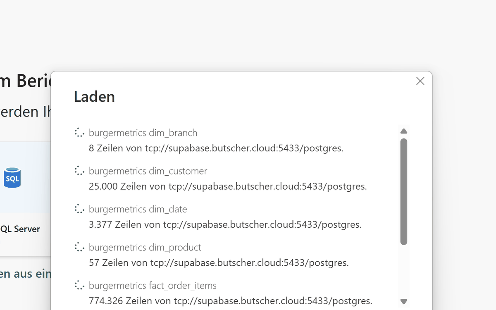
fact_order_items steht hier bei 774.326 von 2.950.082. Der Import der sieben Tabellen dauerte in dieser Prüfung rund zwei Minuten.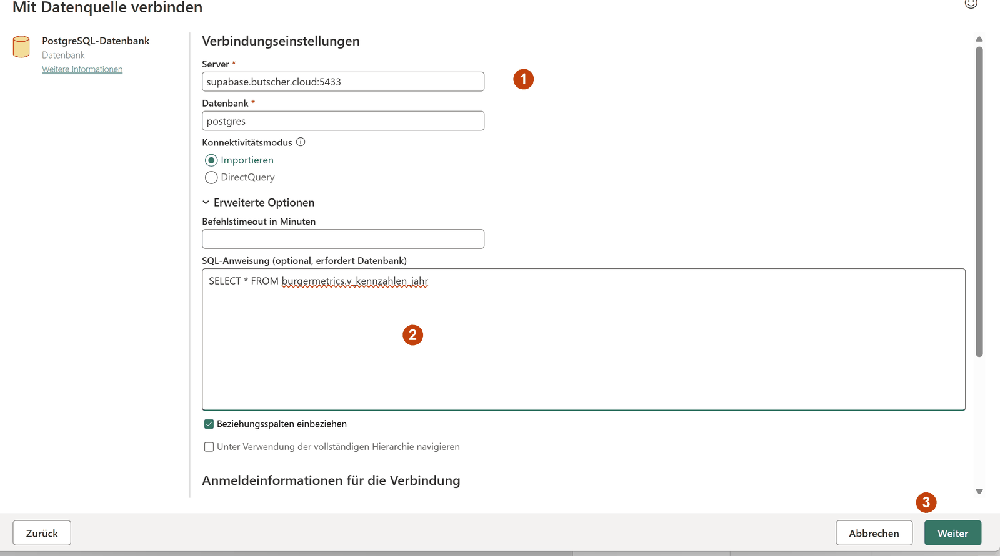
SELECT * FROM burgermetrics.v_kennzahlen_jahr, 3 Weiter. Power Query fragt danach einmal, ob die „native Datenbankabfrage“ ausgeführt werden darf.Bildschirmfotos vom 21.09.2026, Power BI Desktop 2.157.1354.0 (August 2026) unter Windows 11, deutsche Oberfläche — zum Vergrößern anklicken.
Das Modell: Beziehungen aus Fremdschlüsseln — und zwei von Hand
Ein Galaxy-Schema braucht in Power BI Beziehungen zwischen Fakten und Dimensionen, sonst steht in jeder Zeile eines Bildes der Gesamtwert. Zwei Optionen unter Datei → Optionen und Einstellungen → Optionen → Datei laden sind vorausgewählt: „Beim ersten Laden Beziehungen aus Datenquellen importieren“ und „Neue Beziehungen nach dem Laden der Daten automatisch erkennen“. In burgermetrics gibt es 13 Fremdschlüssel:
| Von | Nach | Beziehungen |
|---|---|---|
fact_orders | dim_date, dim_branch, dim_customer, dim_payment_method, dim_promotion | 5 |
fact_order_items | fact_orders, dim_product | 2 |
fact_reviews | dim_date, dim_product, dim_customer, dim_branch, fact_orders | 5 |
dim_employee | dim_branch | 1 |
Von den 13 betreffen zehn die sieben Tabellen aus dem Navigator oben. Nach dem Laden standen acht davon im Modell — alle über Spalten, die auf _id enden, im Projektordner mit dem Präfix AutoDetected_. Die zwei Fremdschlüssel auf das Datum fehlten: fact_orders.date → dim_date.date und fact_reviews.date → dim_date.date zeigen auf die eindeutige Spalte date, nicht auf den Primärschlüssel date_id, und kamen weder aus dem Fremdschlüssel-Import noch aus der automatischen Erkennung. Sie entstehen von Hand: Modellansicht → Beziehungen verwalten → Neue Beziehung, oben fact_orders mit der Spalte date, unten dim_date mit date, Kardinalität Viele-zu-Eins (*:1), Kreuzfilterrichtung Einfach. An jeder Linie steht danach * an der Faktentabelle und 1 an der Dimension. Die Beziehung fact_reviews → fact_orders über order_id hat Power BI selbst als Eins-zu-Eins angelegt — jede Bestellung hat höchstens eine Rezension, order_id ist auf beiden Seiten eindeutig — und selbst auf inaktiv gesetzt, weil sie neben der direkten Beziehung zum Datum ein zweiter Filterpfad wäre. Handarbeit bleibt an drei Stellen:
Zwei Beziehungen von Hand, fact_orders[date] → dim_date[date] und fact_reviews[date] → dim_date[date], beide *:1. Ohne sie filtert das Jahr nichts: Eine Kachel mit Umsatz und dem Filter dim_date[year] = 2025 zeigt weiter alle Jahre, 14.522.378,70 €. Dazu dim_date als Datumstabelle markieren (Tabellentools → Als Datumstabelle markieren, Spalte date), damit Zeitintelligenz wie SAMEPERIODLASTYEAR darauf rechnet (Abschnitt „Das Dashboard“).
dim_weather (eine Zeile je Tag, Schlüssel date) und dim_time_slot (eine Zeile je Stunde, Schlüssel hour) haben in der Datenbank keinen Fremdschlüssel — beim Laden entsteht keine Beziehung. Wer sie braucht, legt sie wie das Datum von Hand an: fact_orders[date] → dim_weather[date] und fact_orders[hour] → dim_time_slot[hour], beide *:1.
obt_orders trägt in 41 Spalten, was Fakten und Dimensionen verbunden ergeben. Im Modell hätte sie keine Beziehung zu den übrigen Tabellen und jede Kennzahl ein zweites Mal — ein Measure Umsatz auf obt_orders und eines auf fact_orders liefern dieselbe Zahl und zwei Definitionen.
Bildschirmfoto vom 21.09.2026, Power BI Desktop 2.157.1354.0 (August 2026) unter Windows 11, deutsche Oberfläche — zum Vergrößern anklicken.
- 1
fact_ordersin der Mitte mit Linien zudim_branch,dim_customerunddim_date— der Stern, den die Prüfung nach dem Laden zeigen muss. Die Beziehungen zudim_payment_methodunddim_promotionentstehen erst, wenn diese Tabellen mitgeladen werden. - 2An jeder Linie
*an der Faktentabelle und1an der Dimension: viele Bestellungen, eine Filiale. Der Pfeil in der Mitte zeigt die Filterrichtung — ein Filter aufdim_branch[branch_name]wirkt infact_orders, nicht umgekehrt. - 3Die gestrichelte Linie
fact_reviews → fact_ordersist inaktiv,1an beiden Enden: Power BI hat sie als Eins-zu-Eins erkannt und selbst abgeschaltet. Aktiv wäre sie der zweite Filterpfad vom Datum zu den Rezensionen. - 4Die beiden Linien zu
dim_date, von Hand angelegt. Über sie filtert das Jahr Bestellungen und Rezensionen;Ø Sterneje Filiale und Jahr rechnet über die eigenen Beziehungen der Rezensionen. - 5
fact_order_itemshängt mit*:1anfact_orders— die Positionen haben ihren eigenen Grain (Lab 03). Ein Measure auf jeder der beiden Tabellen rechnet richtig; eine zusammengeführte Tabelle nicht (Abschnitt „Stolpersteine“). - 6„Beziehungen verwalten“ öffnet die Liste aller Beziehungen mit Status; „Neue Beziehung“ darin legt die fehlenden an.
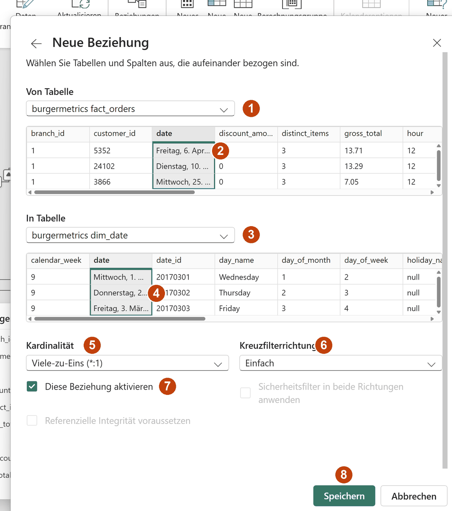
fact_orders, 2 Spalte date anklicken, 3 In Tabelle dim_date, 4 Spalte date, 5 Viele-zu-Eins, 6 Einfach, 7 aktiv, 8 Speichern. Dasselbe für fact_reviews.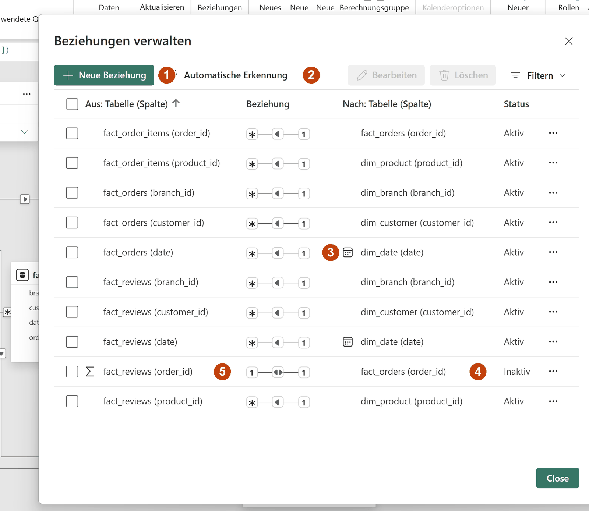
1 auf beiden Seiten.Bildschirmfotos vom 21.09.2026, Power BI Desktop 2.157.1354.0 (August 2026) unter Windows 11, deutsche Oberfläche — zum Vergrößern anklicken.
Prüfung nach dem Laden: Modellansicht öffnen, fact_orders in der Mitte, Linien zu allen drei Dimensionen — zählen Sie die Linien zu dim_date. Fehlt eine, steht in jeder Zeile des Bildes dieselbe Summe — der Fehler ist sichtbar, bevor er in einen Bericht kommt (Bildschirmfoto im Abschnitt „Stolpersteine“).
Measures in DAX
Ein Measure speichert keinen Wert. Es ist eine Formel, die bei jeder Abfrage im Filterkontext des Bildes neu rechnet, in dem es steht — dasselbe Measure liefert im Balken „BM Europastern“ den Umsatz dieser Filiale und in einer Kachel den Gesamtwert. Fünf Measures tragen den Bericht dieses Labs; die Vorlage enthält sie mit Erklärung, Befehlskarte B02 zerlegt sie.
Bildschirmfoto vom 21.09.2026, Power BI Desktop 2.157.1354.0 (August 2026) unter Windows 11, deutsche Oberfläche — zum Vergrößern anklicken.
- 1Der Name des Measures, wie er vor dem Gleichheitszeichen steht —
Ø Sternedarf Leerzeichen und Sonderzeichen tragen. - 2Die Formelleiste mit der Formel; Eingabe legt das Measure an. Ein Fehler in der Formel erscheint darunter in Rot, das Measure entsteht trotzdem und zeigt ihn beim Ziehen in ein Bild.
- 3Das Format kommt nach dem Anlegen über die Measuretools: Währung mit 2 Dezimalstellen für Beträge, Ganze Zahl mit Tausendertrennzeichen für
Bestellungen. Ohne Format zeigt eine Kachel2994771,13. - 4Die Hometabelle: Ein Measure gehört zu der Tabelle, die beim Anlegen im Datenbereich markiert war —
fact_reviewsfürØ Sterne,fact_ordersfür die übrigen vier. Rechnen tut es über das ganze Modell. - 5Im Datenbereich stehen Measures mit dem Taschenrechner-Symbol unter ihrer Hometabelle; Spalten mit Σ sind Zahlen, für die Power BI eine Summe vorschlägt.
Measure
- rechnet bei jeder Abfrage, je Zelle eines Bildes, im Filterkontext
- speichert nichts; das Modell bleibt so groß wie die Tabellen
- für alles, was aggregiert: Summen, Anzahlen, Mittelwerte, Quotienten
- die fünf Measures der Vorlage
Berechnete Spalte
- rechnet beim Laden, je Zeile, und speichert das Ergebnis
- kennt die aktuelle Zeile, aber nicht den Filter des Berichts
- für Kategorien je Zeile, etwa eine Bestellwertklasse aus
net_total - keine in diesem Lab
Die Kontrollzahl
Legen Sie Umsatz 2025 in eine Kachel: 2.994.771,13 €. Dieselbe Zahl liefern v_kennzahlen_jahr (Lab 01), Notebook 01 (01_analytisches_datenmodell.ipynb) und das Dashboard. Weicht sie ab, stimmt etwas am Modell nicht: Eine Beziehung fehlt, oder die Zahl kommt aus einer zusammengeführten Tabelle. Bestellungen mit demselben Filter zeigt 136.557.
Der Bericht
Der Bericht ist eine Seite mit einer Tabelle, einem Balkendiagramm und einer Linie; die Kacheln kommen im Dashboard. Jedes Bild wählt die Aufteilung eines Measures nach Filiale oder Monat; die Definition der Kennzahl bleibt in der Sicht.
| Bild | Felder | Was es zeigt |
|---|---|---|
| Tabelle „Kennzahlen 2025“ | Spalten [Bestellungen], [Bestellwert], [Ø Sterne], [Umsatz] | eine Zeile ohne Dimension — mit dem Seitenfilter dim_date[year] = 2025: 136.557 · 21,93 € · 3,75 · 2.994.771,13 € |
| Balken Umsatz je Filiale | Y-Achse dim_branch[branch_name], X-Achse [Umsatz] | acht verschieden lange Balken, BM Europastern vorn mit 537.906,79 € |
| Linie Umsatz je Monat | X-Achse dim_date[month], Y-Achse [Umsatz] | zwölf Punkte für 2025, Spitze im Juli |
Der Filter auf dim_date[year] steht im Filterbereich unter „Filter für diese Seite“ und gilt für die ganze Seite: Alle drei Bilder rechnen im selben Filterkontext, und die Balken summieren sich auf die Tabelle. Ein Bild, das aus der Reihe fällt, verrät eine fehlende Beziehung — zeigt der Balken in jeder Filiale die Summe der Tabelle, filtert dim_branch die Fakten nicht.
Bildschirmfoto vom 21.09.2026, Power BI Desktop 2.157.1354.0 (August 2026) unter Windows 11, deutsche Oberfläche — zum Vergrößern anklicken.
- 1Die Tabelle mit den vier Measures und dem Titel „Kennzahlen 2025 — die Kontrollzahlen aus v_kennzahlen_jahr“: Alle vier Zahlen stimmen mit der Sicht überein.
- 2Balkendiagramm (gruppiert, waagerecht):
branch_nameauf der Y-Achse,Umsatzauf der X-Achse, Titel als Aussage. Die Achse beginnt bei null. - 3Liniendiagramm:
monthauf der X-Achse,Umsatzauf der Y-Achse. Die Y-Achse ist beschnitten — bei einer Linie zulässig, weil die Position kodiert, nicht die Länge. - 4Der Filterbereich mit „Filter für diese Seite“:
yearist 2025. Er gilt für jedes Bild der Seite. - 5Der Build-Bereich (Visualisierungen): Symbol des Bildtyps wählen, dann die Felder in die Ablagen ziehen — die Field Wells, die der Simulator unten nachbildet.
- 6Der Datenbereich mit den Measures unter
fact_orders; ein Häkchen legt ein Feld in die erste passende Ablage des markierten Bilds.
Zwei Regeln aus dem Deck
Balken beginnen bei null. Ihre Länge kodiert den Wert; eine Achse, die erst bei einem hohen Betrag beginnt, macht aus einem kleinen Unterschied einen langen Balken.
Der Titel ist eine Aussage. „Umsatz nach branch_name“ beschreibt die Achsen; „BM Europastern erzielt 2025 den höchsten Umsatz“ sagt, was das Bild zeigt. Eine Kachel nennt neben dem Wert den Zeitraum, aus dem er stammt — 2.994.771,13 € sind der Umsatz eines Jahres, nicht der aller Jahre.
Das Dashboard
Der Bericht zeigt Zahlen; ein Dashboard stellt sie in einen Vergleich. Das Dashboard dieses Labs folgt vier Regeln aus dem Deck: Grau ist der Normalfall, Farbe die Ausnahme — die einzige Farbe sitzt in der Abweichung zum Vorjahr, Grün für plus, Rot für minus. Zahlen bleiben Zahlen — die Filialen stehen in einer Tabelle, der Balken liegt hinter der Zahl, nicht daneben. Die Abweichung bekommt eine eigene Zeile — die Linie zeigt Ist und Vorjahr in Grau und Blau, darunter stehen die Prozentwerte je Monat als eigenes Diagramm. Small Multiples in derselben Skala — acht Filialen als acht kleine Linien mit einer gemeinsamen Achse, jede mit dem letzten Wert beschriftet statt mit einer Legende. Der Titel ist ein Measure und nennt Jahr, Summe, Abweichung und die führende Filiale: „Umsatz 2025: 2,99 Mio. €, +5,4 % zum Vorjahr – BM Europastern liegt vorn“.
![Dashboard-Seite in Power BI Desktop: Titel Umsatz 2025: 2,99 Mio. €, +5,4 % zum Vorjahr – BM Europastern liegt vorn; Jahresauswahl 2025; vier Kacheln Umsatz 2,99 Mio. €, Bestellungen 136.557, Bestellwert 21,93 €, Ø Sterne 3,75 mit grünen Abweichungstexten zum Vorjahr; Tabelle der acht Filialen mit Datenbalken hinter Umsatz Tsd. €, Vorjahr, Δ Vorjahr in Grün, Bestellungen, Bestellwert und Ø Sterne; Liniendiagramm Umsatz je Monat Ist blau und Vorjahr grau mit rotem Punkt und 245 am letzten Monat; Säulen Abweichung zum Vorjahr je Monat in Grün; acht Small Multiples Umsatz je Monat und Filiale mit roten Endpunkten](assets/powerbi/dashboard.png)
Bildschirmfoto vom 21.09.2026, Power BI Desktop 2.157.1354.0 (August 2026) unter Windows 11, deutsche Oberfläche — zum Vergrößern anklicken.
- 1Der Titel als Karte mit dem Measure
Titel Dashboard: Er rechnet mit, wenn das Jahr wechselt. - 2Die Jahresauswahl, ein Datenschnitt auf
dim_date[year]als Dropdown mit Einzelauswahl; 2025 ist voreingestellt. Ohne gewähltes Jahr zeigen die Kacheln „ein Jahr wählen für den Vorjahresvergleich“. - 3Vier Karten:
Umsatz,Bestellungen,Bestellwert,Ø Sterne— die Kontrollzahlen 2,99 Mio. €, 136.557, 21,93 €, 3,75. - 4Darunter je eine Karte mit dem Text-Measure zur Abweichung, gefärbt über das Farb-Measure: +5,4 %, +2,4 %, +2,9 % und +0,05 Sterne zum Vorjahr 2024.
- 5Die Matrix der acht Filialen, absteigend nach Umsatz: Datenbalken in Grau hinter
Umsatz Tsd. €, daneben Vorjahr,Δ Vorjahrin Farbe, Bestellungen, Bestellwert, Ø Sterne; Gesamtzeile 2.995 · 2.841 · +5,4 % · 136.557 · 21,93 € · 3,75. - 6Ist (blau) gegen Vorjahr (grau) je Monat in Tsd. €, Serien direkt beschriftet statt mit Legende, der letzte Monat mit rotem Punkt und Wert: Dezember 245.
- 7Die Abweichung je Monat als eigene Zeile: Säulen mit Vorzeichen, gefärbt über
Δ Umsatz Farbe— 2025 in jedem Monat grün, +1,1 % im Februar bis +7,8 % im Juli. - 8Small Multiples: eine Linie je Filiale in derselben Skala, jede mit rotem Endpunkt und Wert. BM Europastern liegt bei 44 Tsd. € im Dezember, BM Zellerau und BM Grombühl bei 21.
Die Vorjahresmeasures brauchen dim_date als markierte Datumstabelle und SAMEPERIODLASTYEAR; die Vorlage powerbi-dashboard.dax enthält alle 20 Measures und die Spalte Monat mit Erklärung, Befehlskarte B03 zerlegt die wichtigsten. Die Klickwege für die vier Bausteine, die den Unterschied zum Bericht machen, stehen in Befehlskarte B04 und den Bildschirmfotos darunter.
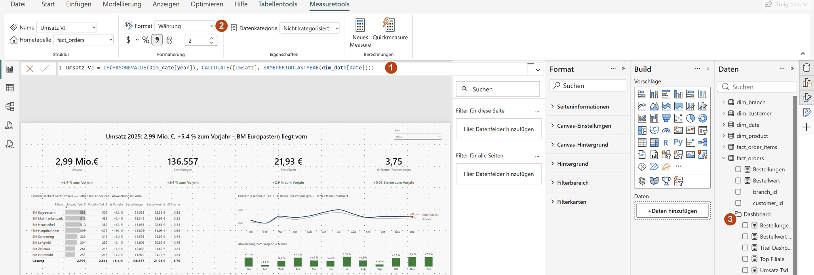
Umsatz VJ in der Formelleiste, 2 Format Währung mit zwei Dezimalstellen, 3 der Anzeigeordner „Dashboard“ im Datenbereich — ein Ordner, in dem die 20 Measures beisammenliegen (Eigenschaften in der Modellansicht, Feld „Anzeigeordner“).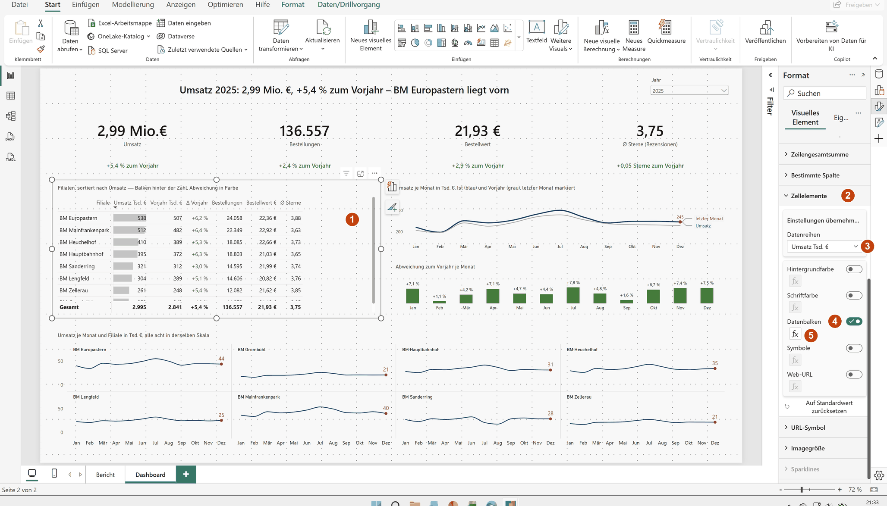
Umsatz Tsd. € wählen, 4 Datenbalken einschalten, 5 über fx die Farbe auf Grau stellen und die Achse auf null lassen.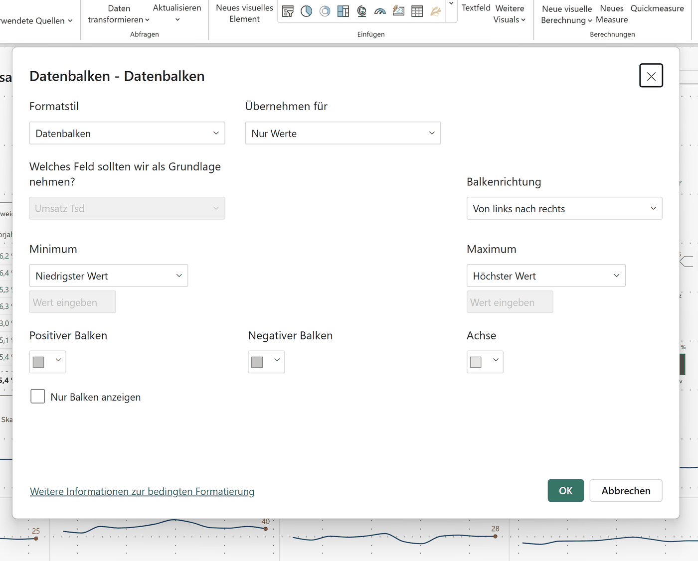
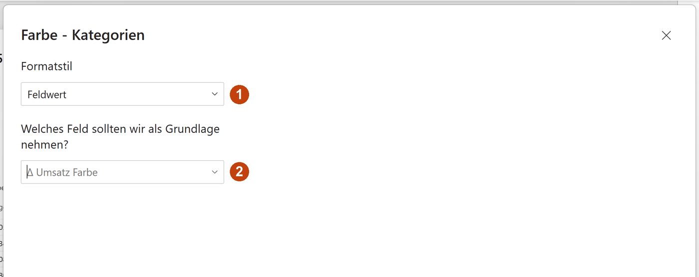
Δ Umsatz Farbe, das je Monat einen Hex-Code liefert. Dieselbe Einstellung färbt die Δ-Spalte der Matrix und die Texte unter den Kacheln.Bildschirmfoto vom 21.09.2026, Power BI Desktop 2.157.1354.0 (August 2026) unter Windows 11, deutsche Oberfläche — zum Vergrößern anklicken.
- 1X-Achse: die Spalte
Monatausdim_date— Monatskürzel, nachmonthsortiert, damit Jan vor Feb steht. - 2Y-Achse:
Umsatz Tsdund dazuUmsatz Tsd letzter Monat, ein Measure, das nur im jüngsten Monat einen Wert hat. Es zeichnet den roten Punkt und trägt die einzige Beschriftung. - 3Small Multiples:
branch_name— aus einem Diagramm werden acht, zwei Zeilen zu vier Spalten (Format → Small Multiples → Layout). - 4Das Ergebnis mit gemeinsamer Skala 0 bis 50 Tsd. €: Die Höhe der Linie ist zwischen den Filialen vergleichbar, weil jede dieselbe Achse hat.
- 5Datenbeschriftungen an, aber je Serie: für
Umsatz Tsdaus, fürletzter Monatan — Format → Datenbeschriftungen → Einstellungen übernehmen auf → Serie. - 6Marker ebenso je Serie: kleine blaue Punkte auf der Hauptlinie, ein großer roter auf dem letzten Monat.
Was das Dashboard nicht tut
Kein Kuchen, keine Tacho-Anzeige, keine eingefärbten Kacheln: Länge kodiert Größe, Fläche und Farbe tun es nicht. Keine Legende: Serien und Small Multiples sind direkt beschriftet. Keine Gitternetze, keine Rahmen, keine Schatten. Die Balken der Matrix beginnen bei null; die Y-Achse der Linie ist beschnitten, weil dort die Position kodiert. Wo ein Kennzahlentitel stünde („Umsatz nach Monat“), steht die Einheit — „in Tsd. €“ — und wo die Aussage hingehört, steht sie im Titel.
Stolpersteine
Der Navigator „Daten auswählen“ listet Tabellen und gewöhnliche Sichten — in der Datenbank der Fallstudie 48 Einträge —, aber keine materialisierten Sichten. Die 38 Sichten v_* in burgermetrics sind materialisiert (Lab 01) und tauchen nicht auf, auch nicht mit v_ im Suchfeld. Abhilfe: im Verbindungsdialog unter „Erweiterte Optionen“ das Feld „SQL-Anweisung“ mit SELECT * FROM burgermetrics.v_kennzahlen_jahr; Power Query fragt einmal „Native Datenbankabfrage — Möchten Sie diese native Abfrage genehmigen?“, danach kommt die Sicht als Tabelle „Abfrage“ ins Modell — zehn Zeilen, 2025 mit 136.557 · 2.994.771,13 · 21,93. Die Genehmigung merkt sich Power BI je Abfrage in den Datenquelleneinstellungen unter „Systemeigene Datenbankabfragen“.
Nach dem Laden hat das Modell acht Beziehungen, alle über _id-Spalten; die zwei Fremdschlüssel auf dim_date.date sind nicht dabei. Symptom: Der Filter dim_date[year] = 2025 ändert nichts, jede Kachel zeigt den Wert aller Jahre. Abhilfe: Modellansicht → Beziehungen verwalten → Neue Beziehung, fact_orders[date] und fact_reviews[date] je auf dim_date[date], Viele-zu-Eins; danach „Als Datumstabelle markieren“.
Ein Balkendiagramm „Umsatz je Filiale“ zeigt in jeder Filiale denselben Wert, den Gesamtumsatz — und eine zusätzliche Zeile „(Leer)“. Dann ist die Beziehung zwischen fact_orders und dim_branch inaktiv oder fehlt: Die Dimension kann die Fakten nicht filtern, jede Filiale bekommt die Summe, und die Bestellungen ohne Filiale sammeln sich unter „(Leer)“. Power BI meldet nichts; der Fehler ist nur im Bild zu sehen. Abhilfe: Modellansicht öffnen, die Linie prüfen oder anlegen (*:1, Filterrichtung einfach). Nachgestellt, indem die Beziehung in „Beziehungen verwalten“ auf inaktiv gesetzt wurde:
Wer fact_orders und fact_order_items zu einer Tabelle zusammenführt und darauf SUM(net_total) rechnet, hat die Fan Trap aus Lab 03: Jeder Bestellwert zählt so oft, wie die Bestellung Positionen hat — 14,7 statt 3,0 Mio. € für 2025 (14.692.551 € gegen 2.994.771 €, aus der Datenbank gerechnet). Power BI meldet nichts. Abhilfe: zwei Faktentabellen mit eigener Beziehung, jedes Measure auf dem Grain, auf dem der Betrag entsteht.
Im DirectQuery-Modus scheitert jedes Bild, dessen Abfrage mehr als 1.000.000 Zeilen liefert: „Fehler beim Abrufen von Daten für dieses Visual. Das Resultset einer Abfrage an eine externe Datenquelle hat die maximal zulässige Größe von 1000000 Zeilen überschritten.“ Ein Bild auf Positionsebene über fact_order_items tut das — die Tabelle hat 2.950.082 Zeilen; nachgestellt mit einem Measure, das je order_item_id rechnet. Eine Aggregation — Positionen je Bestellung, je Filiale — bleibt unter der Grenze. Die Grenze gilt für DirectQuery; die Checkliste lädt die Tabelle per Import.
Eine Version von Power BI Desktop vor Dezember 2019 meldet beim Verbinden, dass sie keine Verbindung herstellen kann und der Anbieter Npgsql fehlt — der Treiber wurde damals noch nicht mitgeliefert. Abhilfe: Power BI Desktop aktualisieren. Seit Dezember 2019 ist Npgsql nach Herstellerangabe enthalten; mit Version 2.157.1354.0 (August 2026) war in dieser Prüfung nichts zu installieren.
Die Rolle studi_daba hält höchstens zwanzig gleichzeitige Sitzungen (Lab 01). Ein DirectQuery-Bericht öffnet für jedes Bild Abfragen; ein Hörsaal voller solcher Berichte belegt die zwanzig Sitzungen in Minuten, und die nächste Anmeldung scheitert mit FATAL: too many connections for role "studi_daba". Import fragt die Datenbank nur beim Laden und beim Aktualisieren.
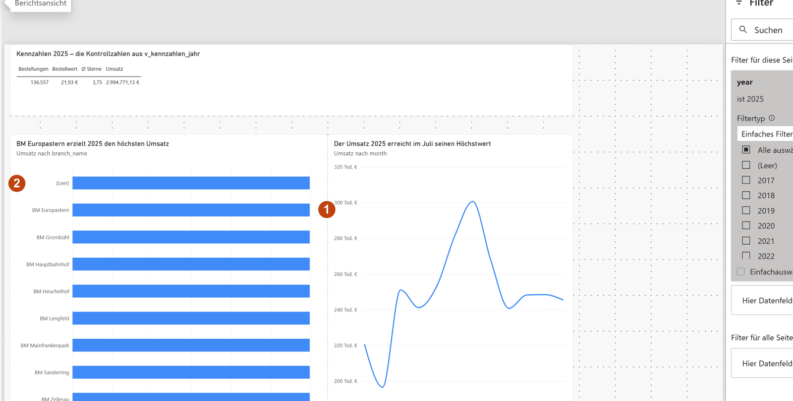
dim_branch: 1 in jeder Filiale die Gesamtsumme, 2 dazu die Zeile „(Leer)“. Die Linie daneben rechnet weiter richtig, weil ihre Beziehung zum Datum steht.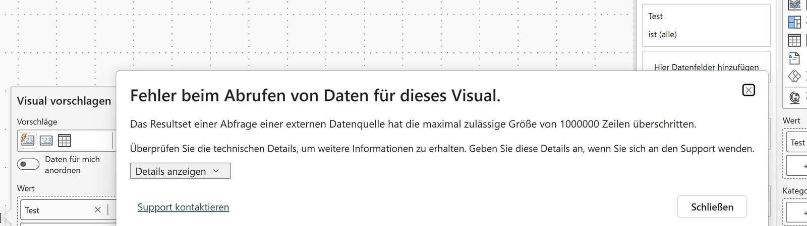
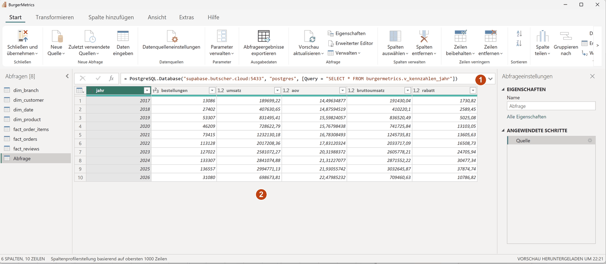
Query, 2 zehn Jahre, 2025 mit 136.557 Bestellungen und 2.994.771,13 €.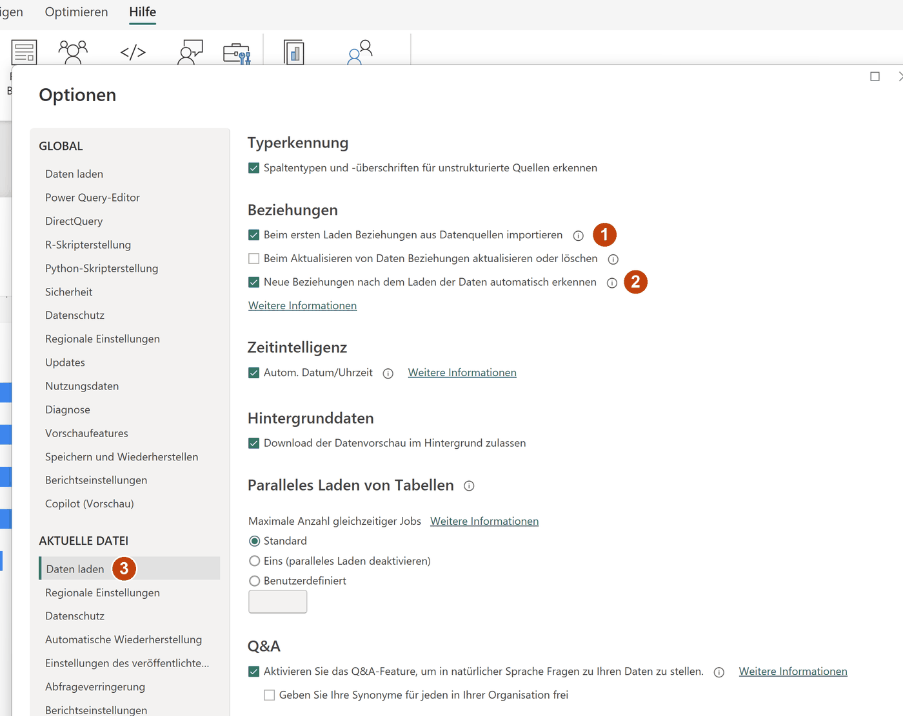
Bildschirmfotos vom 21.09.2026, Power BI Desktop 2.157.1354.0 (August 2026) unter Windows 11, deutsche Oberfläche — zum Vergrößern anklicken.
Simulator
Der Simulator unten bildet die Field Wells eines Bildes in Power BI nach: X-axis, Y-axis, Legend und Filters. Drei Dinge unterscheiden ihn von Power BI Desktop. Felder werden in den Field Wells ausgewählt statt gezogen. Σ-Felder — die Kennzahlen — bekommen im Chip eine Aggregation, die Sie umstellen können: SUM, AVG, COUNT, MIN, MAX; der Vorschlag ist SUM, wie bei Power BI für jede Zahlenspalte. Und das Diagramm wählen Sie nicht, es folgt aus der Belegung: eine Spalte auf X-axis und eine Kennzahl auf Y-axis ergeben senkrechte Balken, eine geordnete Spalte wie Monat oder Stunde eine Linie, eine Legende Serien, nur Spalten ohne Kennzahl (oder nur eine Kennzahl) eine Tabelle. Die Übungen sprechen von Spalten und Zeilen — im Simulator sind das X-axis und Y-axis.
Die Daten sind 2.000 Bestellungen des Jahres 2025 aus obt_orders als flache Tabelle — das, was ein Bild nach dem Weg über die Beziehungen sieht. Die Felder:
| Feld | Art | Werte |
|---|---|---|
| Monat | Spalte, geordnet | 2025-01 bis 2025-12 — auf X-axis entsteht eine Linie |
| Wochentag | Spalte | Mo bis So |
| Stunde | Spalte, geordnet | 6 bis 23 |
| Filiale | Spalte | die acht Filialen |
| Kanal | Spalte | App Order, Counter, Drive-Through, Kiosk |
| Zahlart | Spalte | Cash, Credit Card, EC Card, Mobile Payment |
| Loyalty-Stufe | Spalte | Bronze, Silver, Gold — None steht für Kunden ohne Stufe |
| Saison | Spalte | Spring, Summer, Autumn, Winter |
| Bestell-ID | Σ Kennzahl | die Bestellnummer — eine Kennung; SUM darüber ergibt 1.310.137.177, eine Zahl ohne Bedeutung, COUNT zählt 2.000 Bestellungen |
| Umsatz (€) | Σ Kennzahl | Bestellwert nach Rabatt; Summe aller 2.000: 43.882,98 € |
| Positionen | Σ Kennzahl | Zahl der Positionen je Bestellung, 1 bis 15; Summe 9.145 |
| Zufriedenheit | Σ Kennzahl | 2 bis 5, nur bei 451 bewerteten Bestellungen; AVG ignoriert die Lücken und liefert 3,86 |
Übungen
Fünf Übungen: zwei im Simulator — Umsatz je Filiale als Balken, Bestellungen je Monat als Linie mit COUNT statt SUM —, ein Quiz zu Import, Beziehungen und Measures, eine Zuordnung von DAX-Ausdruck und Zweck und eine Checkliste für Bericht und Dashboard in Power BI Desktop gegen die Datenbank der Fallstudie.
Zusammenfassung
- Power BI ist ein weiterer Leser der Datenbank: ein Modell aus den Tabellen des Galaxy-Schemas (Lab 03), Measures in DAX, ein Bericht. Die Definition der Kennzahl bleibt in der Sicht (Lab 01); die Kontrollzahl ist 2.994.771,13 € Umsatz aus 136.557 Bestellungen für 2025.
- Import kopiert die Tabellen in den Speicher, DirectQuery fragt bei jedem Bild die Datenbank — Grenze 1.000.000 Zeilen je Abfrageergebnis, Microsoft empfiehlt Import (Stand 09/2026). Für den Kurs gilt Import: Die Rolle hält zwanzig Sitzungen.
- Verbinden:
Start → Daten abrufen → Weitere… → PostgreSQL-Datenbank, ein Dialog mit Serversupabase.butscher.cloud:5433, Datenbankpostgres, Importieren, Authentifizierungsart Standard mitstudi_daba/thws; kein Treiber zu installieren. Im Navigatorburgermetricssuchen,dim_*undfact_*laden,obt_ordersnicht; die materialisierten Sichtenv_*fehlen dort und kommen über die SQL-Anweisung. Geprüft am 21.09.2026 mit Version 2.157.1354.0 (August 2026). - Nach dem Laden stehen acht Beziehungen im Modell, alle über
_id-Spalten,*:1mit einfacher Filterrichtung;fact_reviews → fact_ordersist 1:1 und von Power BI selbst inaktiv gesetzt. Von Hand: die zwei Beziehungen aufdim_date[date], danndim_dateals Datumstabelle markieren;dim_weatherunddim_time_slotohne Fremdschlüssel ebenso. - Fünf Measures —
Umsatz,Bestellungen,Bestellwert,Ø Sterne,Umsatz 2025— rechnen im Filterkontext und speichern nichts;CALCULATEändert den Filterkontext,DIVIDEschützt vor der Division durch null. Berechnete Spalten bilden Kategorien je Zeile. - Der Bericht: Tabelle der Kontrollzahlen, Balken je Filiale, Linie je Monat, ein Seitenfilter auf das Jahr. Balken beginnen bei null, Titel sind Aussagen.
- Das Dashboard: Grau vor Farbe, Zahlen bleiben Zahlen, Abweichung in eigener Zeile, Small Multiples in derselben Skala, letzter Punkt markiert. Werkzeuge:
SAMEPERIODLASTYEARauf der markierten Datumstabelle, Datenbalken in der Matrix, Farbe als Measure über „Feldwert“, Small Multiples im Build-Bereich, Titel als Measure. Vorlagepowerbi-dashboard.dax, Projekt unterpowerbi/BurgerMetrics/. - Stolpersteine: materialisierte Sichten fehlen im Navigator (SQL-Anweisung), die Datumsbeziehung fehlt (von Hand anlegen), dieselbe Summe in jeder Zeile samt „(Leer)“ (Beziehung prüfen), eine zusammengeführte Tabelle (Fan Trap, 14,7 statt 3,0 Mio. €), DirectQuery über 1.000.000 Zeilen („Das Resultset einer Abfrage … hat die maximal zulässige Größe von 1000000 Zeilen überschritten“), eine alte Desktop-Version ohne Npgsql, zwanzig Sitzungen im Hörsaal. Lab 05 stellt dieselben Fragen mit Tableau.